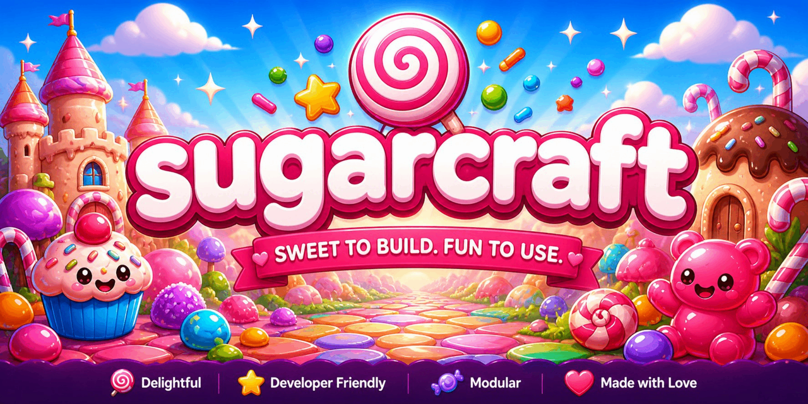
Terminal UIs that taste like candy.
SugarCraft is a PHP-native TUI ecosystem — forty libraries and twenty-two apps (sixty-two packages total). MVC-style Model–Update–View runtime, declarative styling, animation, charts, forms, SSH-served apps, telemetry, file managers, an AI chat shell. Composer-installable, PHP 8.3+, async on ReactPHP.
Every layer of the terminal stack — in PHP.
Click an icon to jump to its detail page. Every package is published independently, ships its own examples and PHPUnit suite, and shares a single styling vocabulary so they compose without glue code.
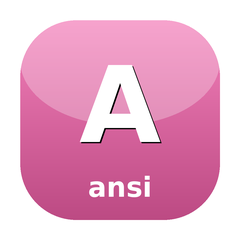
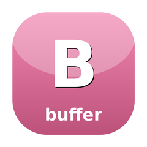
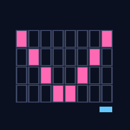
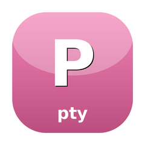
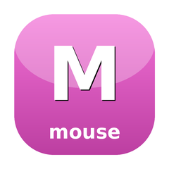
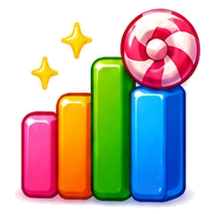
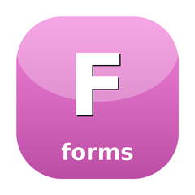
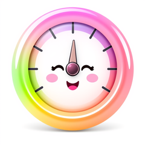
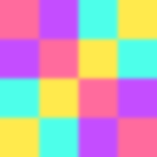
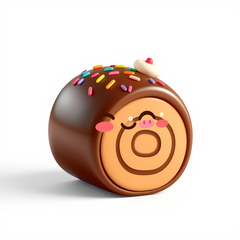
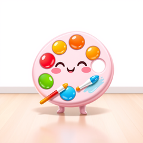
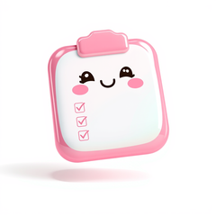
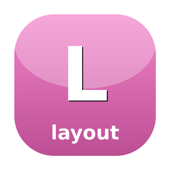
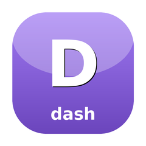
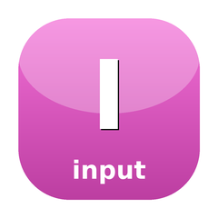
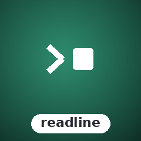
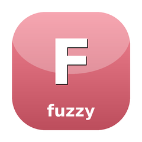
Built for the things Symfony Console can't do.
Persistent render loops, mouse + keyboard, alt-screen, async work without blocking the UI, multi-tenant SSH-served TUIs, charts and sparklines, animated spinners, multi-page forms, Markdown rendered straight to ANSI. The boring parts of CLI tooling — argv parsing, exit codes — pair perfectly with whatever Console framework you already use.
Forty libraries, one ecosystem.
Each library has its own composer package, README, examples, and PHPUnit suite. Pull just the ones you need — or grab the umbrella metapackage and get the lot. The complete catalogue lives on the libraries page.
Twenty-two apps built on the stack.
Standalone executables — CLI tools (prompts, markdown, screenshots), full TUIs (file manager, git, SQLite, AI chat, games), and a project starter — the starter you scaffold, not install. Install via Composer, run as a CLI binary. Every detail page carries controls, architecture, and demo recordings — the showcase below and the full catalogue on the apps page.
 CandyStarter
composer create-project sugarcraft/candy-starter my-app --stability=dev — scaffold a working app from the counter Model (Packagist carries only dev-master until a candy-starter/* tag exists).
CandyStarter
composer create-project sugarcraft/candy-starter my-app --stability=dev — scaffold a working app from the counter Model (Packagist carries only dev-master until a candy-starter/* tag exists).
 CandyScriptui
Composer-installable CLI of thirteen subcommands — choose, confirm, file, filter, format, input, join, log, pager, spin, style, table, write.
CandyScriptui
Composer-installable CLI of thirteen subcommands — choose, confirm, file, filter, format, input, join, log, pager, spin, style, table, write.
 CandyCodeshot
Code → SVG screenshot.
CandyCodeshot
Code → SVG screenshot.
 CandyMdview
Markdown CLI viewer.
CandyMdview
Markdown CLI viewer.
 CandyAnsiInspect
ANSI escape-sequence inspector.
CandyAnsiInspect
ANSI escape-sequence inspector.
 CandySshLauncher
SSH endpoint launcher.
CandySshLauncher
SSH endpoint launcher.
 CandyKv
Personal key/value store CLI — one SQLite file per database.
CandyMail
Email sending library.
CandyGitServer
Self-hostable Git server.
CandyKv
Personal key/value store CLI — one SQLite file per database.
CandyMail
Email sending library.
CandyGitServer
Self-hostable Git server.
 CandyTetris
Tetris clone — SRS rules, 7-bag RNG, ghost piece, NES scoring, level-driven gravity.
CandyTetris
Tetris clone — SRS rules, 7-bag RNG, ghost piece, NES scoring, level-driven gravity.
 CandyFiles
Dual-pane file manager.
CandyFiles
Dual-pane file manager.
 CandyCode
TUI AI coding agent.
CandyCodeWeb
Browser UI for CandyCode's server mode — a Vite + Vue 3 bundle committed as dist/ and located by a one-class PHP shim, so candy-code serve needs no Node.
CandyVcr
Record + replay sugar-core sessions — JSONL/YAML cassettes, Program::setRecorder(), Player + Byte/Screen assertions, .tape→GIF renderer (themes, GD/imagick, ffmpeg/php), CLI.
CandyCode
TUI AI coding agent.
CandyCodeWeb
Browser UI for CandyCode's server mode — a Vite + Vue 3 bundle committed as dist/ and located by a one-class PHP shim, so candy-code serve needs no Node.
CandyVcr
Record + replay sugar-core sessions — JSONL/YAML cassettes, Program::setRecorder(), Player + Byte/Screen assertions, .tape→GIF renderer (themes, GD/imagick, ffmpeg/php), CLI.
 CandyGit
Three-pane git TUI — status / branches / log, single-key stage / unstage.
CandySql
Terminal SQL client TUI — list tables, peek at row data, run ad-hoc queries, explore query plans, and monitor server health.
CandyGit
Three-pane git TUI — status / branches / log, single-key stage / unstage.
CandySql
Terminal SQL client TUI — list tables, peek at row data, run ad-hoc queries, explore query plans, and monitor server health.
 CandyCodetime
Privacy-first coding-time tracker — JSONL on disk, SugarCharts-driven dashboard.
CandyCodetime
Privacy-first coding-time tracker — JSONL on disk, SugarCharts-driven dashboard.
 CandyMinesweeper
Minesweeper — customisable board, iterative flood-fill, win/lose detection.
CandyMinesweeper
Minesweeper — customisable board, iterative flood-fill, win/lose detection.
 CandyGifView
Terminal GIF viewer CLI — sizes to the viewport, plays in the alternate screen (24-bit blocks or luminance ramp) on top of sugar-animation.
CandyImage
Terminal image viewer CLI — the chafa-independent front end over sugar-image: protocol auto-detection down a shell-out-free ladder to block and text tiers with colored-character modes, cell sizing, --canvas/--work/--scale dials, GIF animation, and a --dump-detect that answers "why is my image blank?".
CandyGifView
Terminal GIF viewer CLI — sizes to the viewport, plays in the alternate screen (24-bit blocks or luminance ramp) on top of sugar-animation.
CandyImage
Terminal image viewer CLI — the chafa-independent front end over sugar-image: protocol auto-detection down a shell-out-free ladder to block and text tiers with colored-character modes, cell sizing, --canvas/--work/--scale dials, GIF animation, and a --dump-detect that answers "why is my image blank?".
 CandyTop
Terminal system monitor — cpu, mem + disks, net and process boxes with braille graphs, gradient meters, up to six GPU/NPU boxes, an ipmi BMC band and a VM dashboard, menus, presets, 43 themes and btop-compatible config, over Linux /proc + /sys and FreeBSD collectors.
CandyTop
Terminal system monitor — cpu, mem + disks, net and process boxes with braille graphs, gradient meters, up to six GPU/NPU boxes, an ipmi BMC band and a VM dashboard, menus, presets, 43 themes and btop-compatible config, over Linux /proc + /sys and FreeBSD collectors.
 CandyFlappy
Flappy-Bird in your terminal — bird motion is a SugarSpring projectile, pipes scroll left at a fixed cell rate, collision is per-cell.
CandyFlappy
Flappy-Bird in your terminal — bird motion is a SugarSpring projectile, pipes scroll left at a fixed cell rate, collision is per-cell.
Five layers, no surprises.
SugarCraft is a layered architecture with one responsibility per layer. Dependencies flow one way through the stack, so you can grab as much or as little as you need.
CLI apps: CandyScriptui (one-shot CLI helpers), CandyMdview (markdown), CandyAnsiInspect (ANSI inspector), CandyCodeshot (code → SVG), CandySshLauncher (SSH launcher), CandyGitServer (git server), CandyKv (key/value store), CandyMail (email sender).
TUI apps: CandyStarter, CandyTetris, CandyFiles, CandyCode, CandyGit, CandySql, CandyCodetime, CandyMinesweeper, SugarAnimation, CandyTop, CandyFlappy.
Web UI: CandyCodeWeb (browser face of CandyCode).
Async-first
ReactPHP event loop under the hood. Cmds are closures dispatched on the loop; the render thread never blocks on I/O.
Immutable values
Immutable value objects across the fleet — with*() returns a new instance. sugar-style carries a documented naming exception (bare bold()/fg() builders over a private with()).
Testable by design
Pure update functions and snapshot ANSI tests. No tmp dirs, no mocks for the renderer — just assert against the frame.
One styling vocabulary
Every package speaks SugarCraft\Style\Style. Mix SugarMarkdown output into a SugarWidgets Viewport, wrap that with a SugarStyle Border — they all compose.
SSH the easy way
SugarSshServer leans on ForceCommand. sshd handles auth, ciphers, fail2ban, audit logs — you get a clean middleware programming model.
No native extensions
Pure-PHP base flow. ext-pcntl, ext-gd, ext-ssh2 are optional for niche features.
See them run.
VHS-recorded GIFs of every interactive demo, regenerated on every push that touches the corresponding source. Two-hundred-eighty-nine demos in total — these are the headliners; click into any library page for its full set.
Accessibility note: the previews are looping GIF recordings. A
reduced-motion preference stops this site's own transitions and
animations, but browsers cannot pause an animated
<img> — the TUIs themselves honour
REDUCE_MOTION / PREFERS_REDUCED_MOTION
where supported (sugar-spring, sugar-colorprofile).

SugarCraft
↑ ↓ counter through the runtime
SugarStyle
Styled dashboard with borders + colours
SugarWidgets
Spinner gallery — all 12 styles
SugarCharts
Heatmap rendered to ANSI
SugarForms
Multi-page form wizard
CandyScriptui
One-shot style subcommand
SugarMarkdown
Markdown → ANSI render
SugarCli
StatusLine + Banner + Stage CLI page
CandyCodeshot
Code → SVG screenshot generator
CandyMdview
README rendered through 4 themes
CandyAnsiInspect
Labelling SGR / OSC / DCS / APC
CandySshLauncher
SSH endpoint picker with type-filter
SugarSpring
Damped spring oscillator
CandyStarter
Counter app on the scaffold — run composer create-project
CandyTetris
Tetris with ghost piece + hard drop
CandyFiles
Dual-pane file manager
CandyCode
AI chat shell with EchoBackend
CandyGit
Three-pane git TUI
CandyCodetime
Coding-time dashboard
CandyMinesweeper
Minesweeper, flood-fill + flag
SugarAnimation
ANSI/GIF animation toolkit
CandyGifView
GIF + .ansi-art viewer CLI
CandyFlappy
Flappy-Bird with SugarSpring physics
SugarTable
Frozen column + paginated host telemetry
SugarToast
Error / Warning / Info / Success toast types
SugarFlexbox
Ratio-based FlexBox row + column
SugarDatepicker
Interactive month-grid date picker
SugarOverlay
Modal + centered overlays composited over a frame
SugarColorprofile
Terminal color-profile detection
SugarMouse
Mouse-zone tracking on rendered buttonsFrom composer require to a working counter in ten lines.
Install the umbrella, drop the snippet below into a file,
php counter.php. ↑ ↓ to count, q to quit.
1. Install
composer require sugarcraft/sugarcraft2. Write the model
use SugarCraft\Core\{Cmd, KeyType, Model, Msg, Program};
use SugarCraft\Core\Msg\KeyMsg;
final class Counter implements Model {
public function __construct(public readonly int $n = 0) {}
public function init(): ?\Closure { return null; }
public function update(Msg $msg): array {
if ($msg instanceof KeyMsg && $msg->rune === 'q') return [$this, Cmd::quit()];
return [match (true) {
$msg instanceof KeyMsg && $msg->type === KeyType::Up => new self($this->n + 1),
$msg instanceof KeyMsg && $msg->type === KeyType::Down => new self($this->n - 1),
default => $this,
}, null];
}
public function view(): string { return "n = {$this->n}\n↑ ↓ to count, q to quit\n"; }
}
(new Program(new Counter()))->run();
3. Run it
php counter.phpWant a project skeleton instead?
composer create-project sugarcraft/candy-starter my-app
scaffolds a runnable counter app with PHPUnit wired up — see
CandyStarter.
Why pick SugarCraft?
Three flavours of "build a TUI in PHP" — pick the row that matches your project's needs. (Full reasoning on the comparison page.)
| Capability | SugarCraft | Symfony Console | readline / raw |
|---|---|---|---|
| MVC-style Model–Update–View runtime (Model / Msg / Cmd) | ✓ | — | — |
| Async event loop (ReactPHP) | ✓ | partial | — |
| Declarative styling (CSS-like flexbox / borders) | ✓ | manual | — |
| Composable form library | ✓ (SugarForms) | — | — |
| Mouse + key bindings | ✓ | — | — |
| SSH-served apps (multi-tenant) | ✓ (SugarSshServer) | — | — |
| Charts / sparklines / heatmaps | ✓ (SugarCharts) | — | — |
| One-shot CLI prompts | ✓ (CandyScriptui) | primitive | — |
| Markdown → ANSI rendering | ✓ (SugarMarkdown) | — | — |
| Code → SVG screenshots | ✓ (CandyCodeshot) | — | — |
| Telemetry primitives (StatsD / Prom) | ✓ (SugarMetrics) | — | — |